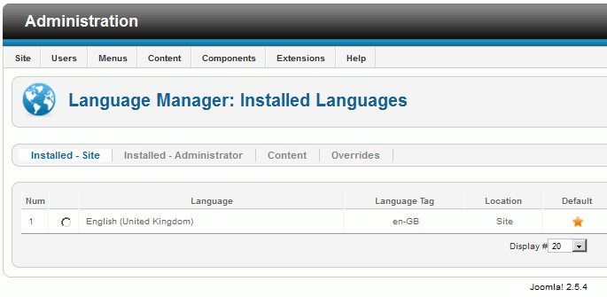

Aplicación: Joomla - Joomla 2.5.4 (02/04/12)
Nota: las capturas deben ser capturas de la pantalla completa en la que se vea la ventana del navegador y algún icono del escritorio.
Seleccionar el idioma: Spanish (español)
Comprobar que los requisitos se cumplen
Tipo de base de datos: Mysqli
Nombre del sitio: Examen final de suNombre susApellidos
Su correo: admin@example.org
Nombre del administrador: admin
Contraseña del administrador: admin
Datos de ejemplo: Datos de ejemplo predeterminados en inglés (GB) No instalar los datos de ejemplo
Eliminar carpeta de instalación

Nota: No preocuparse por el aviso "No se puede inicializar la función de correo".